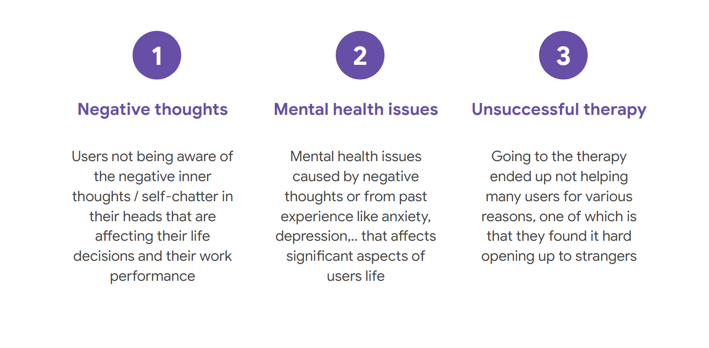
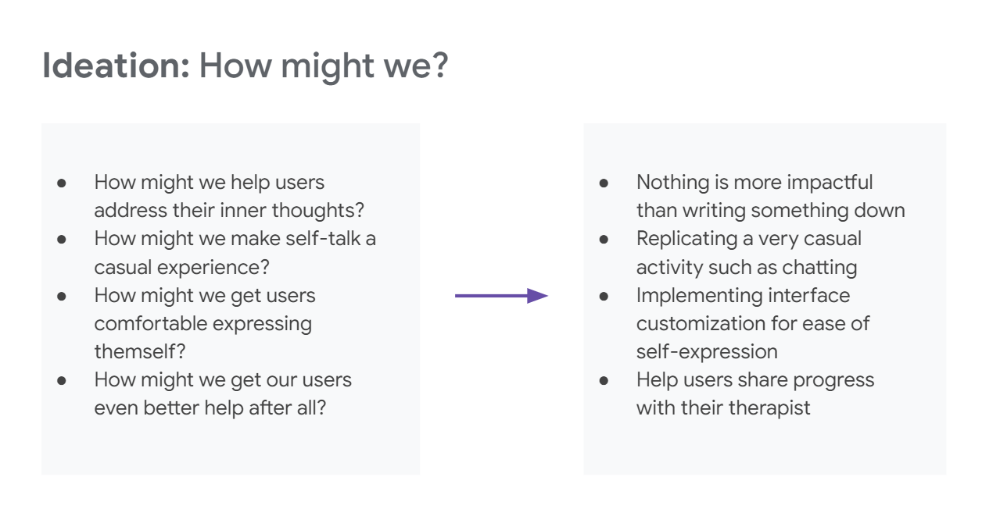
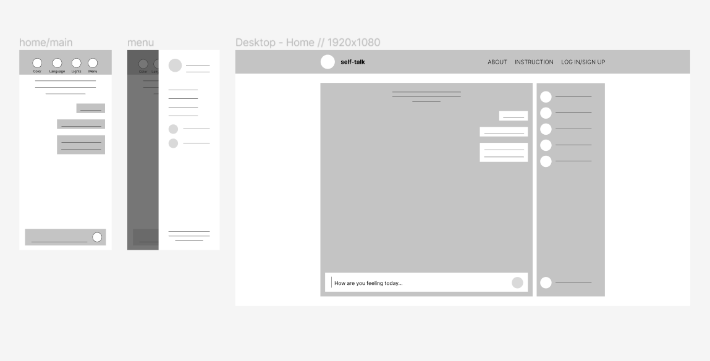
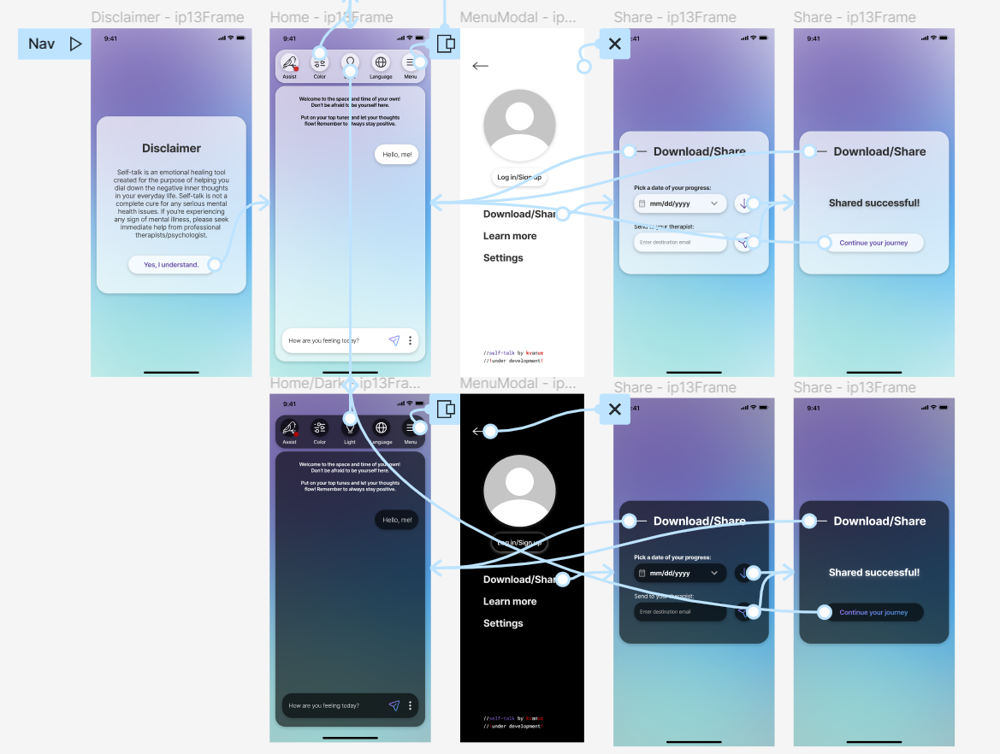
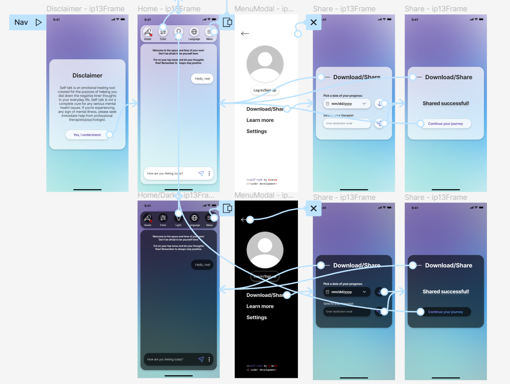

CASE STUDY: self-talk
A cross-platform app that helps users improve mental health
ROLE: UX Designer
DURATION: Jan 2023 - Feb 2023
PROJECT GOAL: A cross-platform psychological healing tool to help users fight negative self-talk.
TARGET AUDIENCE: Anyone suffering from negative self-talk
CHALLENGE:
- The unawareness of negative self-talk leads to negative thinking
and in turn affects one’s confidence, work efficiency and overall
day-to-day life. This is a common problem among people that suffer
from depression and/or anxiety.
- Addressing personal and sensitive makes researching very difficult
1. Research and Empathize
Taking on the research for this project proved to be more
difficult than it usually is as we were addressing sensitive and
personal psychological issues.
I started off slow with secondary researches to identify all the
aspects of the problem we are facing, to narrow down our target
users and to know exactly the right questions to ask the users.
Then I conducted an online anonymous survey to get an overview
of participant's psychological situation, their take on the
subject and also trying to recruit potential participants for
user testing.

I went through a lot of theses and articles addressing the
matter at hand and narrow down these 4 studies as the base of
the project:
-
The downside of therapy
-
What is self-talk?
-
The effects of self-talk on self-confidence and anxiety
-
Positive self-Talk on productivity and better feelings
Pain Points
Meet the Users
Problem Statement
Amalia is a professional athlete who needs an emotional healing tool because she suffers from cognitive anxiety that affects her performance.
2. Initial Ideas and Designs
"How Might We?" ideating exercise
With clear understandings of the challenge thanks to the research datas, I went on to write down "How Might We?" questions that address the problems we're trying to resolve. Having the right answers for these questions would give us general ideas and concepts for the product.
Low-fi Wireframes and Prototype
I moved on to Figma to create low-fidelity wireframes to prepare for the first round of user testing.
User Testing
Due to the limitations of the prototyping tool/software, I was
not able to fully implement all the core functions of the
product into the low-fi prototype. This prevents me from
conducting a proper usability study as I normally would at this
stage of the design process.
However, I did come out with an alternative solution that is
basically a combination of a moderated usability study and an
interview. Participants are asked to check out and perform basic
navigations of the prototype and then answer a scripted
questionaire stating what they like and don't about the designs.
The outcomes obviously couldn't be as sufficient as they would
be if it had been done with a fully functioning prototype.
Fortunately, the participants still gave a lot of feedbacks that
could be turned into actionable insights. Some of them were so
obvious I wished I could have think of it earlier. Here are the
finalized findings:
- Users need
more instructions with the
chat interface.
- Users need more
closed-up guidance to make
sure they are “thinking” right.
3. Final Design

 

Try it out here: Final Prototype
TAKEAWAYS
IMPACT: Our users showed interest in the initial designs and prototypes and are eager for the product to be launched.
WHAT I LEARNED: Throughout the process of designing Self-talk from start to finish, I’ve learned that different target audiences with different problems might require variations in design thinking and methods. The challenges from this project allowed me to explore new research and ideation methods as well as testing usability with a functionality-limited prototype.
NEXT STEPS
- Plan and conduct usability study with the fully developed,
functioning product.
- Conduct research and plan the design for the voicing function.